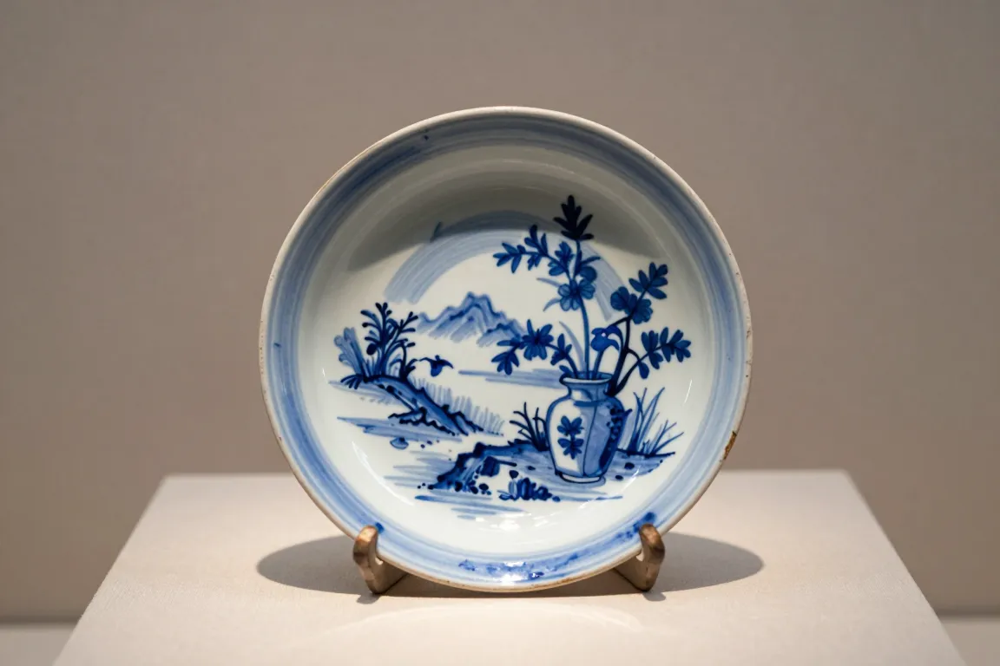

Tin-glazed earthenware that the potters of Delft made after 1640 to copy Chinese blue-and-white porcelain. A thin buff body takes a thick white tin glaze and cobalt painting in one firing.

Core thesis
A cheap local clay looks like Chinese porcelain when a white tin glaze covers it and a fast brush paints it in cobalt blue.
Design principles
Cover the whole buff body with an opaque white tin glaze 0.5 to 1 mm thick.
Paint the cobalt on the raw, dry glaze in one pass; the glaze takes the stroke at once.
Divide a plate rim into 6 or 8 panels after Chinese kraak porcelain.
Put one scene in the well of the plate: a landscape, a flower vase or Chinese figures.
Give a fine piece a clear lead overglaze, the kwaart, for a higher gloss.
Fire the glaze at 1000 to 1100 °C in saggars, so that the flame does not touch the glaze.
Mark the base with the sign of the pottery and the initials of the owner.
Anti-patterns
A translucent vitrified body that shows light through the wall
Thin even printed lines that repeat with no change of hand
A brown or red body left bare on the front face
Bright overglaze colours over the whole surface in the early work